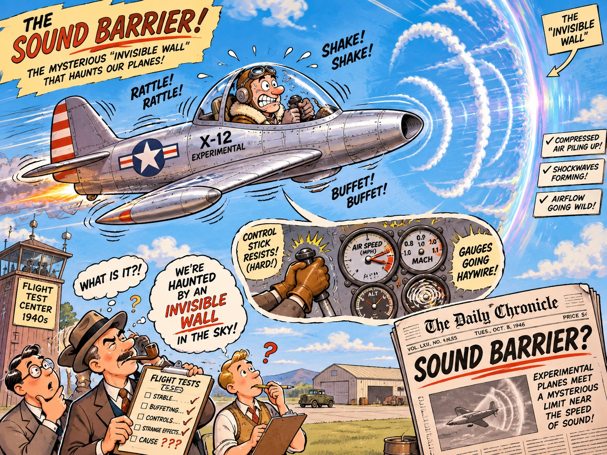

In the mid-1940s, aviation engineers and test pilots were haunted by an invisible wall in the sky. As propeller-driven and early jet aircraft approached the speed of sound—roughly 767 miles per hour at sea level—something violent happened. Air, which normally flows smoothly over wings, began to compress into localized shockwaves. Controls locked up, instruments went haywire, and ferocious aerodynamic buffeting shook the airframes to pieces. Several pilots lost their lives as their planes disintegrated mid-air. The press dubbed this phenomenon the "sound barrier," and many believed that human-made machines were simply never meant to survive it.

Today, humanity is strapped into the cockpit of a civilization hurtling toward a very different, yet strikingly similar, threshold: Artificial General Intelligence (AGI).
Much like those early aircraft, our greatest existential test does not necessarily lie in the distant future of an established, post-AGI world, but rather in the turbulent, violent transition required to get there. We are entering the "transonic regime" of intelligence. The next decade will be defined by maximum structural stress, where the potential for societal and economic disintegration is at its absolute peak. It is a moment in history that is equal parts exhilarating, thrilling, and deeply terrifying.
![The stress peaks in the middle of the transition. Schematic of drag by flight regime, not to scale: drag and stress stay low in the subsonic range, below about Mach 0.8, peak in the transonic range, about Mach 0.8 to 1.2, with buffeting and dead controls, then settle to a lower plateau in the supersonic range, above about Mach 1.2. The AI transition mapped onto the same shape: before, the old regime, with controls built for human labor; now, the transonic decade, with mixed regimes and dead controls; after the barrier, smoother, not safe.](mach-1-stress-curve.png)
The Physics of the Transition
To understand why the next ten years will be so nerve-wracking, it helps to look at why the sound barrier was so deadly. In aviation, the danger wasn't supersonic flight itself; it was the transonic phase—the awkward, chaotic middle ground where parts of the airflow over the wing are supersonic and other parts remain subsonic. This mismatch creates immense drag and violently unstable shockwaves.
Humanity is currently experiencing a similar mismatch. Our technology is accelerating to supersonic speeds, while our institutions, legal frameworks, psychological adaptations, and economic safety nets remain stubbornly subsonic. We are trying to fly a 20th-century societal airframe through a 21st-century intelligence shockwave.
During these early years of emerging AGI, the stresses on our global systems will be at their greatest. Job displacement, geopolitical rivalries over compute power, the sudden proliferation of autonomous cyber-weapons, the erosion of shared truth through hyper-realistic synthetic media, and the frantic race to align superhuman systems before they outpace our control will subject civilization to unprecedented buffeting. If the rivets of our society are going to pop, they will pop in the next decade.
The Economic Shockwave: History vs. Our Own Eyes
Nowhere is this transonic buffeting felt more viscerally right now than in the realm of human labor.
Whenever fears of technological unemployment are raised, economists (and I) are quick to point to 150 years of reassuring history. Since the Industrial Revolution, the "Luddite fallacy" has lived up to its name: while automation destroys specific tasks, it lowers the cost of goods, increases overall wealth, and inevitably generates entirely new industries and job categories that were previously unimaginable. History suggests that humans will not be rendered permanently jobless; we simply move up the value chain.
Yet, there is a jarring disconnect between the comforting macro-view of a 150-year historical chart and what we are seeing with our own eyes right now.
Previous technological revolutions automated muscle; the AGI revolution is automating cognition itself. When the mechanical loom or the assembly line arrived, humans retreated from physical labor into cognitive labor—becoming managers, analysts, coders, writers, and designers. We moved from the field to the factory, and from the factory to the office. But when the machine can write the code, draft the legal brief, diagnose the illness, generate the art, and strategize the marketing campaign faster and cheaper than a human, where is the next retreat?
Even if the economists are ultimately right—even if, fifty years from now, humanity has found a new equilibrium of post-scarcity employment—that historical reassurance ignores the brutality of the transition. The current set of jobs, the ones that billions of people rely on today to pay mortgages, feed families, and derive a sense of purpose, are directly in the crosshairs of the incoming shockwave.
The terrifying element of the next decade is the sheer velocity of this displacement. In the past, technological transitions unfolded over generations; a blacksmith’s son had time to learn to become a mechanic. With AGI, the compression wave might be happening over fiscal quarters. A software engineer, graphic designer, or paralegal watching an AI model master their decade-honed skillset in a matter of months has every right to feel a cold knot in their stomach. The airframe of our current employment model is shaking violently, and we have not yet built the wings required for the next phase of flight.
Beyond the Barrier: Supersonic Smoothness
On October 14, 1947, test pilot Chuck Yeager sat inside the Bell X-1, a bullet-shaped rocket plane designed with a revolutionary movable horizontal stabilizer built specifically to survive transonic shockwaves. As the Mach meter ticked past 0.96 and toward 1.0, the buffeting was intense. And then, at Mach 1.06, something miraculous happened.
The shaking stopped.
Yeager later remarked that once he punched through the shockwave, the ride became so smooth that "Grandma could be sitting up there sipping lemonade." The "barrier" was not a solid wall after all; it was merely a turbulent threshold.
This is the thrilling, intoxicating promise that sits on the other side of our current anxiety. If humanity can reinforce its institutions, rethink the social contract, decouple human survival from traditional labor, and successfully align artificial intelligence with human flourishing, life past the AGI sonic wave could be remarkably smooth. We are looking at the potential eradication of diseases that have plagued us for millennia, the rapid unlocking of clean fusion energy, personalized education for every child on Earth, and a material abundance that renders poverty a relic of the subsonic past.
Strapped In for the Decade Ahead
We do not get to choose the era into which we are born, and it is our surreal fortune to be alive right as the Mach meter of human history approaches 1.0.
It is rational to look at the impending obsolescence of current jobs and feel a profound sense of dread. It is equally rational to look at the capabilities of these emerging minds and feel a breathtaking sense of awe. The two emotions do not cancel each other out; they amplify one another.
The next decade will test our collective engineering, our empathy, and our resilience to their absolute limits. The controls are already beginning to vibrate. The shockwave is building on the wings. All we can do is grip the stick, adapt our designs in real time, and hold our breath as we push through the barrier into a sky we have never flown before.
Comments